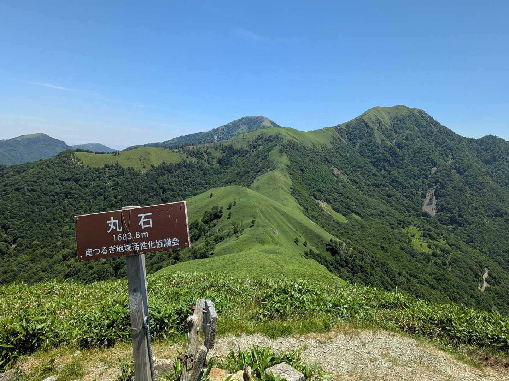
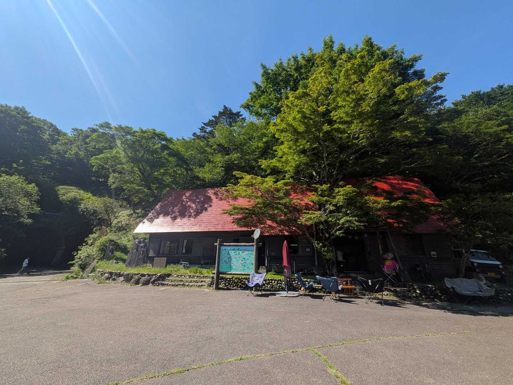

見ノ越から山の家へ
- 記録距離
- 18.5km
- 記録時間
- 10時間
- 累積のぼり
- 1,830m
剣山・丸石・山の家・次郎笈をめぐった個人の実績。当日は落としたストックを探して剣山へ再登頂しており、標準的な周回時間ではありません。
記録と軌跡を確認 ↗
TWO MOUNTAINS, TWO FEELINGS
丸石で振り返る、剣山と次郎笈。
不入山で出会う、枝を広げた千手観音ブナ。
奥槍戸に通う「にゃさ」さんの山行記録には、
山頂だけでは終わらない、好きな風景が残っています。
歩いたあとは、赤い屋根の山の家へ。
ふたつの山の楽しみ方を、実際の写真でたどります。
01 / THE OPEN RIDGE
笹の緑に一本の道。次郎笈の西へ延びる稜線を歩き、丸石で振り返ると、剣山と次郎笈が並ぶ眺めに出会います。
「丸石までの稜線、やっぱり好き」にゃさ / 2025.06.28
2022年にも、2025年にも。「また来たい」が重なる景色です。
この日の山行日記を読む ↗見ノ越から剣山を経由し、次郎笈のトラバースから丸石へ。その後スーパー林道へ下り、山の家に立ち寄って次郎笈側へ登り返す周回。長い行程と登り返しを含む山行です。体力と時間に合わせて計画を。
プロフィール掲載の周回記録 ↗02 / THE BEECH & THE SKY
奥槍戸山の家から歩き出し、千手観音ブナへ。葉のない春にも、その枝ぶりには思わず足が止まります。
ブナの前の草原から、くるめ、不入山へ。剣山や次郎笈を、いつもと違う向きから眺める山歩きです。
「どこまでも歩きたくなるような風景」にゃさ / 2024.04.14の投稿よりこの日の山行日記を読む ↗

A PLACE TO COME BACK TO
山歩きの記録のそばには、いつも山の家の時間。カレーを食べて、景色を思い返して、もう少しだけゆっくりしたくなる。
丸石の長い周回でも、不入山から戻ったあとでも。赤い屋根が見えると、ほっとします。
奥槍戸山の家を知る ↗写真は2024〜2025年の訪問時。営業日・メニューは最新の公式案内をご確認ください。A SHORT MOUNTAIN JOURNEY
FIELD NOTES / PHOTO COLLECTION
BEFORE YOU GO
ふたつの記録は、別の日に歩いたもの。
このページは魅力を紹介する写真案内です。実際のルートは地図と最新情報で確認してください。
剣山・丸石・山の家・次郎笈をめぐった個人の実績。当日は落としたストックを探して剣山へ再登頂しており、標準的な周回時間ではありません。
記録と軌跡を確認 ↗山の家 → 千手観音ブナ → くるめ → 不入山 → 往路を戻る。記録の歩行ペースは速め。休憩・撮影・登り返しの余裕を加えて計画を。
記録と軌跡を確認 ↗天気と足元稜線の風・霧、濡れた笹、残雪などに合わせて装備と撤退時刻を決める。
アクセススーパー林道の規制・路面状況を出発前に確認する。過去の走行記録だけで通行可と判断しない。
山の家営業日と食事の提供状況を確認し、水・行動食は自分でも用意する。
PHOTOGRAPHS & STORIES
写真・投稿：にゃさ（YAMAP ID:1470710）。掲載写真は各山行当時の風景です。山名・標高はYAMAP山情報を参照（2026.09.26確認）。